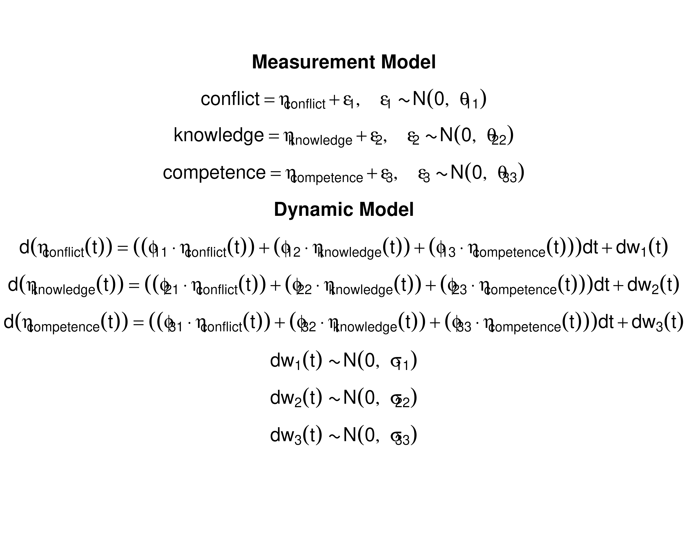

Fitting the Continuous-Time Vector Autoregressive Model
Ivan Jacob Agaloos Pesigan
Source:vignettes/fig-example-ct-var.Rmd
fig-example-ct-var.RmdThis vignette demonstrates how to fit the continuous-time vector
autoregressive model using the dynr package.
Load the data set
data("grundy2007", package = "manCTMed")Prepare the Initial Condition
data_0 <- grundy2007[which(grundy2007[, "time"] == 0), ]
dynr_initial <- dynr::prep.initial(
values.inistate = colMeans(data_0)[
c(
"conflict",
"knowledge",
"competence"
)
],
params.inistate = rep(x = "fixed", times = 3),
values.inicov = cov(data_0)[
c(
"conflict",
"knowledge",
"competence"
),
c(
"conflict",
"knowledge",
"competence"
)
],
params.inicov = matrix(
data = "fixed",
nrow = 3,
ncol = 3
)
)Prepare Dynamic Model
dynr_dynamics <- dynr::prep.formulaDynamics(
formula = list(
eta_conflict ~ (phi_11 * eta_conflict) + (phi_12 * eta_knowledge) + (phi_13 * eta_competence),
eta_knowledge ~ (phi_21 * eta_conflict) + (phi_22 * eta_knowledge) + (phi_23 * eta_competence),
eta_competence ~ (phi_31 * eta_conflict) + (phi_32 * eta_knowledge) + (phi_33 * eta_competence)
),
startval = c(
phi_11 = 0,
phi_12 = 0,
phi_13 = 0,
phi_21 = 0,
phi_22 = 0,
phi_23 = 0,
phi_31 = 0,
phi_32 = 0,
phi_33 = 0
),
isContinuousTime = TRUE
)Prepare Noise
dynr_noise <- dynr::prep.noise(
values.latent = matrix(
data = c(
.10, .00, .00,
.00, .10, .00,
.00, .00, .10
),
nrow = 3
),
params.latent = matrix(
data = c(
"sigma_11", "sigma_12", "sigma_13",
"sigma_12", "sigma_22", "sigma_23",
"sigma_13", "sigma_23", "sigma_33"
),
nrow = 3
),
values.observed = matrix(
data = c(
.10, .00, .00,
.00, .10, .00,
.00, .00, .10
),
nrow = 3
),
params.observed = matrix(
data = c(
"theta_11", "fixed", "fixed",
"fixed", "theta_22", "fixed",
"fixed", "fixed", "theta_33"
),
nrow = 3,
ncol = 3
)
)Prepare the Model
model <- dynr::dynr.model(
data = dynr_data,
initial = dynr_initial,
measurement = dynr_measurement,
dynamics = dynr_dynamics,
noise = dynr_noise,
outfile = "ct-var.c"
)Add Model Constraints to Aid in Optimization
lb <- ub <- rep(NA, times = length(model$xstart))
names(ub) <- names(lb) <- names(model$xstart)
lb[
c(
"phi_11",
"phi_21",
"phi_31",
"phi_12",
"phi_22",
"phi_32",
"phi_13",
"phi_23",
"phi_33"
)
] <- -1.5
ub[
c(
"phi_11",
"phi_21",
"phi_31",
"phi_12",
"phi_22",
"phi_32",
"phi_13",
"phi_23",
"phi_33"
)
] <- 1.5
ub[
c(
"phi_11",
"phi_22",
"phi_33"
)
] <- 0
lb[
c(
"sigma_11",
"sigma_22",
"sigma_33"
)
] <- .Machine$double.xmin
lb[
c(
"theta_11",
"theta_22",
"theta_33"
)
] <- .Machine$double.xmin
model$lb <- lb
model$ub <- ubModel Formula
dynr::plotFormula(
dynrModel = model,
ParameterAs = model$"param.names",
printDyn = TRUE,
printMeas = TRUE
)
Fit the Model
fit <- dynr::dynr.cook(
model,
verbose = FALSE
)
#> [1] "Get ready!!!!"
#> using C compiler: ‘gcc (Ubuntu 13.3.0-6ubuntu2~24.04) 13.3.0’
#> Optimization function called.
#> Starting Hessian calculation ...
#> Finished Hessian calculation.
#> Original exit flag: 3
#> Modified exit flag: 3
#> Optimization terminated successfully: ftol_rel or ftol_abs was reached.
#> Original fitted parameters: -0.03371248 0.03781617 -0.01320671 -0.1523502
#> -0.5902622 0.230235 -0.1004354 0.1054622 -0.5151492 -2.852352 -0.1499536
#> 0.1770817 -0.2943714 0.1351704 -0.1908467 -2.255498 -1.761862 -2.542695
#>
#> Transformed fitted parameters: -0.03371248 0.03781617 -0.01320671 -0.1523502
#> -0.5902622 0.230235 -0.1004354 0.1054622 -0.5151492 0.05770845 -0.008653589
#> 0.01021911 0.7462974 0.09916955 0.8416808 0.1048214 0.1717249 0.07865413
#>
#> Doing end processing
#> Successful trial
#> Total Time: 2.172916
#> Backend Time: 2.160493Summary
summary(fit)
#> Coefficients:
#> Estimate Std. Error t value ci.lower ci.upper Pr(>|t|)
#> phi_11 -0.033712 0.022461 -1.501 -0.077735 0.010310 0.0667 .
#> phi_12 0.037816 0.037012 1.022 -0.034727 0.110359 0.1535
#> phi_13 -0.013207 0.033180 -0.398 -0.078239 0.051826 0.3453
#> phi_21 -0.152350 0.061199 -2.489 -0.272299 -0.032402 0.0064 **
#> phi_22 -0.590262 0.176063 -3.353 -0.935339 -0.245185 0.0004 ***
#> phi_23 0.230235 0.113647 2.026 0.007491 0.452979 0.0214 *
#> phi_31 -0.100435 0.056641 -1.773 -0.211450 0.010579 0.0381 *
#> phi_32 0.105462 0.106935 0.986 -0.104126 0.315050 0.1620
#> phi_33 -0.515149 0.146135 -3.525 -0.801568 -0.228730 0.0002 ***
#> sigma_11 0.057708 0.022977 2.512 0.012674 0.102743 0.0060 **
#> sigma_12 -0.008654 0.029862 -0.290 -0.067182 0.049874 0.3860
#> sigma_13 0.010219 0.028265 0.362 -0.045179 0.065617 0.3589
#> sigma_22 0.746297 0.314194 2.375 0.130487 1.362107 0.0088 **
#> sigma_23 0.099170 0.082397 1.204 -0.062325 0.260664 0.1144
#> sigma_33 0.841681 0.292901 2.874 0.267605 1.415756 0.0020 **
#> theta_11 0.104821 0.016754 6.256 0.071984 0.137659 <2e-16 ***
#> theta_22 0.171725 0.098048 1.751 -0.020445 0.363895 0.0400 *
#> theta_33 0.078654 0.091670 0.858 -0.101015 0.258323 0.1955
#> ---
#> Signif. codes: 0 '***' 0.001 '**' 0.01 '*' 0.05 '.' 0.1 ' ' 1
#>
#> -2 log-likelihood value at convergence = 3569.91
#> AIC = 3605.91
#> BIC = 3719.75